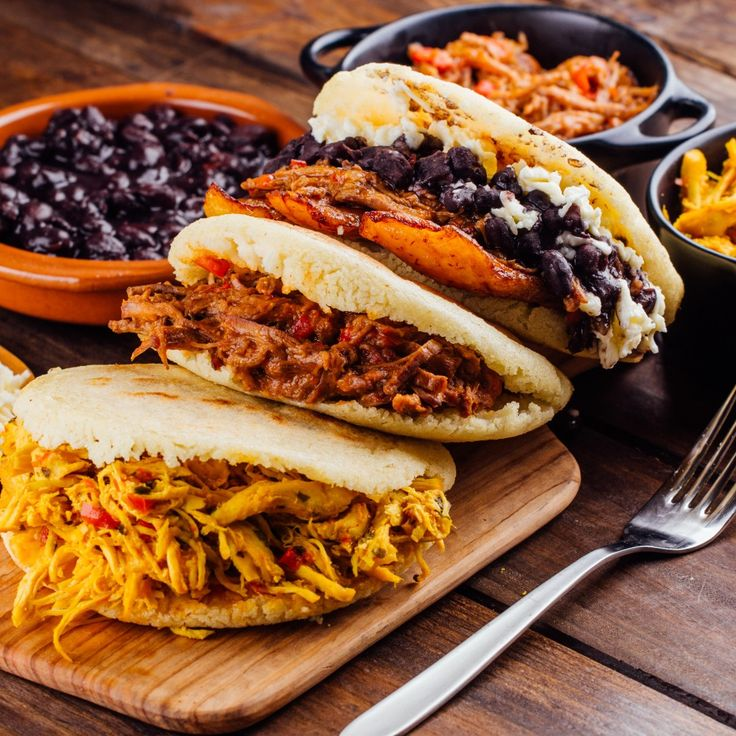

Arepas Colombianas

PaÃs: Colombia
Tipo: Vegetariana
Momento: Desayuno/Cena
Duración: 30 min
Porciones: 6
🧂 Ingredientes
- 2 tazas de harina de maÃz
- 2 tazas de agua
- 1 cucharadita de sal
- 2 cucharadas de mantequilla
- Queso fresco (opcional)
👨‍🍳 Pasos
- Mezclar la harina con agua y sal hasta formar una masa suave.
- Amasar por 5 minutos y formar bolitas.
- Aplanar cada bolita para formar discos de 1 cm de grosor.
- Cocinar en sartén engrasada a fuego medio hasta dorar ambos lados.
- Untar con mantequilla y rellenar con queso si se desea.